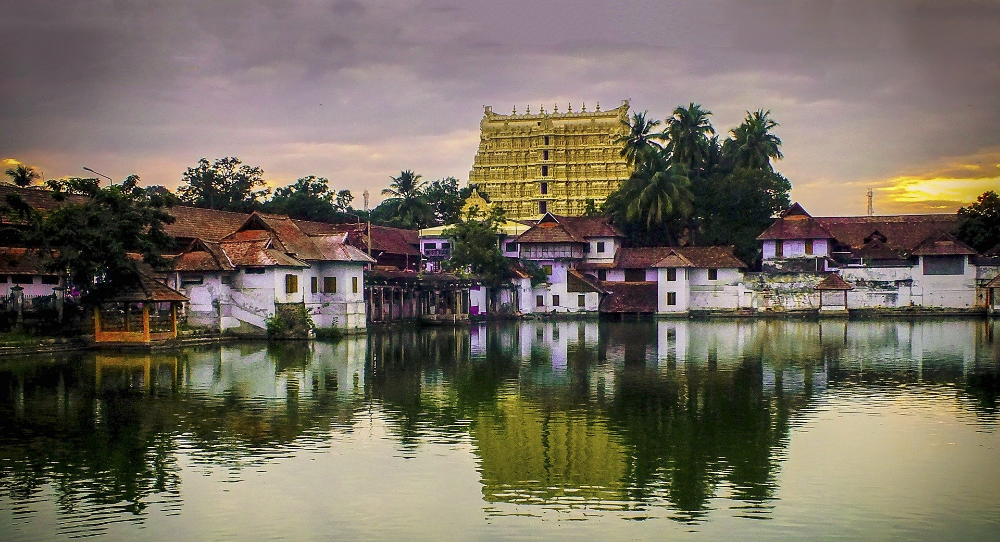
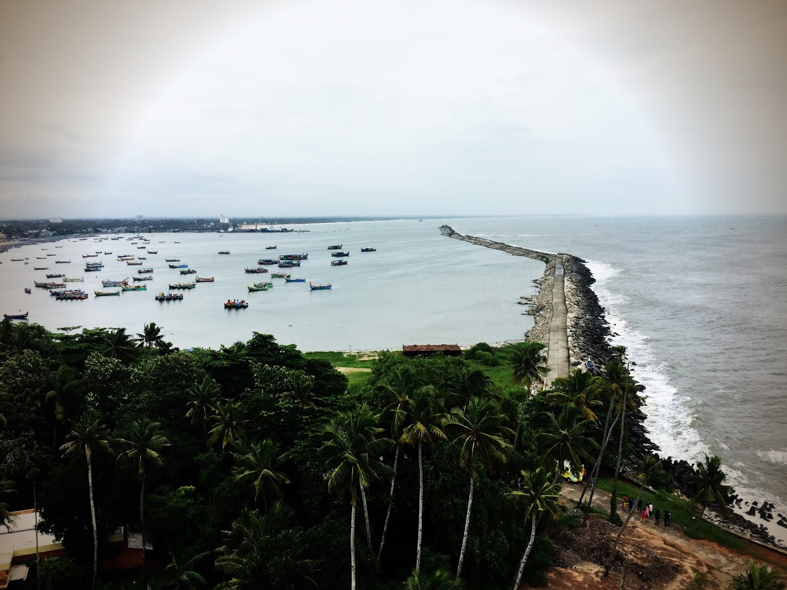

Trivandrum
Thiruvananthapuram, also known by its former name Trivandrum, is the capital of the Indian state of Kerala. It is the most populous city in Kerala with a population of 957,730 as of 2011
Read More

Kollam
Kollam, also known by its former name Quilon, is an ancient seaport and city on the Malabar Coast of India bordering the Laccadive Sea, which is a part of the Arabian Sea.
Read More
Pathanamthitta
Pathanamthitta District, is one of the 14 districts in the Indian state of Kerala. The district headquarters is in the town of Pathanamthitta. There are four municipalities in Pathanamthitta
Read More